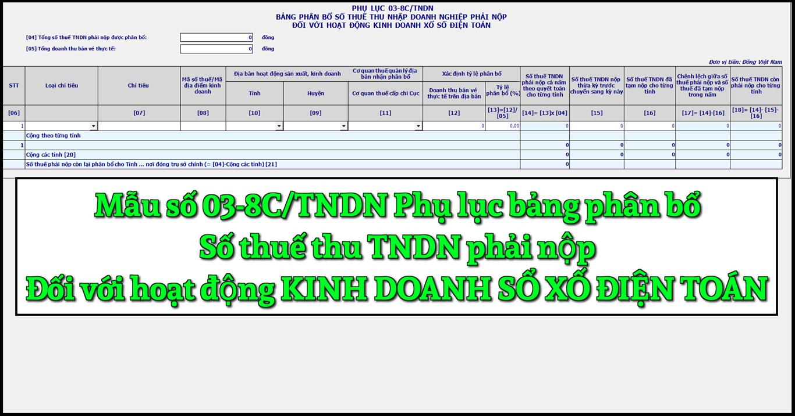

Mẫu Phụ lục bảng phân bổ số thuế thu nhập doanh nghiệp phải nộp đối với hoạt động kinh doanh sổ xố điện toán mới nhất năm 2024 là mẫu số: 03-8C/TNDN được ban hành kèm theo Thông tư số 80/2021/TT-BTC. Đây là mẫu phụ lục kèm theo tờ khai quyết toán thuế thu nhập doanh nghiệp số 03/TNDN
|
Phụ lục
BẢNG PHÂN BỔ SỐ THUẾ THU NHẬP DOANH NGHIỆP PHẢI NỘP ĐỐI VỚI HOẠT ĐỘNG KINH DOANH XỔ SỐ ĐIỆN TOÁN (Kèm theo tờ khai quyết toán thuế thu nhập doanh nghiệp số 03/TNDN) [01] Kỳ tính thuế:...........
[02] Tên người nộp thuế: ...........................................................................................
[03] Mã số thuế: [04] Tổng số thuế TNDN phải nộp được phân bổ: ……………đồng [05] Tổng doanh thu bán vé thực tế:……………đồng
Đơn vị tiền: Đồng Việt Nam
Tôi cam đoan số liệu kê khai trên là đúng và chịu trách nhiệm trước pháp luật về số liệu đã kê khai./.
|
|||||||||||||||||||||||||||||||||||||||||||||||||||||||||||||||||||||||||||||||||||||||||||||||||||||||||||||||||||||||||||
Cách kê khai Phụ lục bảng phân bổ số thuế thu nhập doanh nghiệp phải nộp đối với hoạt động kinh doanh sổ xố điện toán - mẫu số 03-8C/TNDN theo TT 80/2021 như sau:
Chỉ tiêu [01]: Ghi rõ kỳ tính thuế năm phù hợp kỳ tính thuế trên tờ khai 03/TNDN.
Chỉ tiêu [02], [03]: NNT ghi tên và mã số thuế của người nộp thuế phù hợp thông tin trên tờ khai 03/TNDN. NNT khai thuế điện tử thì hệ thống Etax tự động hỗ trợ hiển thị thông tin này từ thông tin NNT kê khai trên tờ khai 03/TNDN.
Chỉ tiêu [04]: NNT kê khai tổng số thuế TNDN phải nộp từ hoạt động kinh doanh xổ số điện toán
Chỉ tiêu [05]: NNT kê khai tổng doanh thu bán vé thực tế từ hoạt động kinh doanh xổ số điện toán tại từng tỉnh trên tổng doanh thu bán vé thực tế của người nộp thuế.
- Doanh thu bán vé thực tế từ hoạt động kinh doanh xổ số điện toán được xác định như sau:
- Trường hợp phương thức phân phối vé xổ số điện toán thông qua thiết bị đầu cuối: Doanh thu từ hoạt động kinh doanh xổ số điện toán phát sinh từ các thiết bị đầu cuối đăng ký bán vé xổ số điện toán trong địa giới hành chính từng tỉnh theo hợp đồng đại lý xổ số đã ký với công ty xổ số điện toán hoặc các cửa hàng, điểm bán vé do người nộp thuế thiết lập trên địa bàn.
- Trường hợp phương thức phân phối vé xổ số điện toán thông qua điện thoại và internet: Doanh thu được xác định tại từng tỉnh nơi khách hàng đăng ký tham gia dự thưởng khi mở tài khoản dự thưởng theo quy định của pháp luật về kinh doanh xổ số điện toán..
Cột [06]: NNT ghi số thứ tự theo từng nơi nhận phân bổ
Cột [07]: NNT ghi thông tin như sau:
- Tên đơn vị phụ thuộc khác tỉnh với nơi NNT đóng trụ sở chính: Kê khai cho tỉnh nơi đơn vị phụ thuộc đóng trụ sở vào chỉ tiêu này. Trường hợp trong một tỉnh có nhiều đơn vị phụ thuộc ở nhiều huyện thì chọn 01 đơn vị phụ thuộc tại 01 địa bàn huyện phát sinh doanh thu để kê khai vào cột [07].
- Tên địa điểm kinh doanh khác tỉnh với nơi NNT đóng trụ sở chính: Kê khai cho tỉnh nơi có địa điểm kinh doanh nếu phát sinh doanh thu bán vé theo từng địa điểm kinh doanh. Trường hợp có nhiều địa điểm kinh doanh trên nhiều huyện thuộc một tỉnh thì chọn 01 địa điểm kinh doanh tại 01 địa bàn huyện phát sinh doanh thu để kê khai vào cột [07].
- Nơi không có đơn vị phụ thuộc, địa điểm kinh doanh: Kê khai cho tỉnh nơi không có đơn vị phụ thuộc, địa điểm kinh doanh nhưng có phát sinh doanh thu bán vé. Trường hợp trong một tỉnh có phát sinh doanh thu bán vé ở nhiều huyện thì chọn 01 địa bàn huyện phát sinh doanh thu để kê khai vào cột [07].
Cột [08]: NNT ghi thông tin MST/mã địa điểm kinh doanh của đơn vị phụ thuộc, địa điểm kinh doanh
Cột [09], [10]: NNT ghi thông tin địa bàn cấp huyện, tỉnh nơi có đơn vị phụ thuộc, địa điểm kinh doanh hoặc hoạt động bán vé khác tỉnh với nơi người nộp thuế đóng trụ sở chính. Trường hợp có nhiều đơn vị phụ thuộc, địa điểm kinh doanh hoặc hoạt động bán vé trên nhiều huyện thuộc một cơ quan thuế quản lý địa bàn nhận phân bổ là Cục Thuế thì chọn 1 đơn vị đại diện hoặc một huyện để kê khai vào chỉ tiêu này.
- Trường hợp có đơn vị phụ thuộc, địa điểm kinh doanh hoặc hoạt động bán vé trên nhiều huyện thuộc 1 cơ quan thuế quản lý địa bàn nhận phân bổ là Chi cục Thuế khu vực thì chọn 1 đơn vị đại diện hoặc 1 huyện do Chi cục Thuế khu vực quản lý để kê khai vào chỉ tiêu này
Cột [11]: NNT ghi thông tin cơ quan thuế quản lý địa bàn nhận phân bổ thuế
Cột [12]: NNT kê khai doanh thu bán vé thực tế trên địa bàn từng tỉnh
Cột [13]: NNT kê khai tỷ lệ phân bổ (%) là tỷ lệ (%) doanh thu bán vé thực tế từ hoạt động kinh doanh xổ số điện toán tại từng tỉnh trên tổng doanh thu bán vé thực tế của người nộp thuế. Số liệu cột [13] = cột [12]/ chỉ tiêu [05]
Cột [14]: NNT kê khai số thuế TNDN phải nộp được phân bổ cho từng tỉnh. Số liệu Cột [14] = Cột [13] x Chỉ tiêu [04]
Cột [15]: NNT kê khai số thuế TNDN nộp thừa tại cơ quan thuế quản lý địa bàn nhận phân bổ trong kỳ trước do NNT thực hiện tạm nộp theo quý lớn hơn số thuế phải nộp phân bổ theo năm, chuyển sang bù trừ với số thuế TNDN phải nộp phân bổ kỳ này.
Cột [16]: NNT kê khai số thuế TNDN đã tạm nộp theo quý trong năm tại cơ quan thuế quản lý địa bàn nhận phân bổ tính đến thời hạn nộp hồ sơ khai quyết toán. Ví dụ: NNT có kỳ tính thuế từ 01/01/2021 đến 31/12/2021 thì số thuế TNDN đã tạm nộp trong năm là số thuế TNDN đã nộp tính đến hết ngày 31/3/2022.
Cột [17]: NNT kê khai chênh lệch giữa số thuế phải nộp và số thuế đã tạm nộp trong năm theo công thức cột [17] = cột [14] - cột [15]
Cột [18]: NNT kê khai số thuế TNDN còn phải nộp sau quyết toán theo công thức cột [17] = cột [14] - cột [15] - cột [16].
